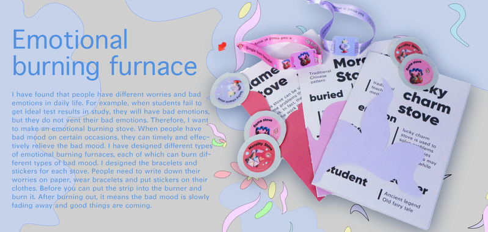
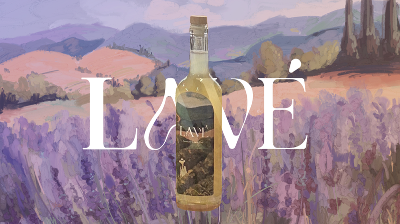
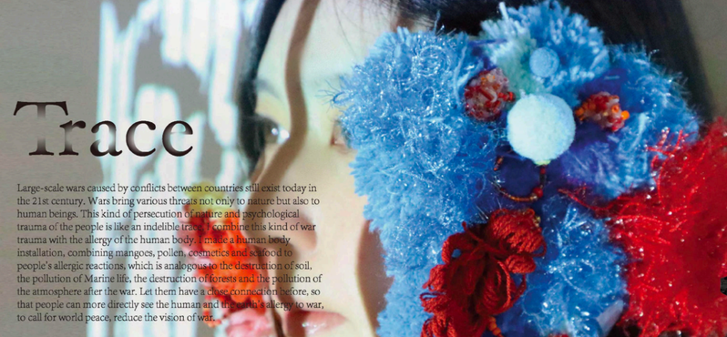

This page showcases my capabilities in brand visual design and creative content production, including logo design, poster creation, and short video production. I also have experience in designing offline promotional campaigns, translating brand concepts into engaging visual assets and immersive experiences.
With a strong understanding of brand positioning and audience insights, I create cohesive and impactful visual and content strategies that enhance brand visibility and engagement across multiple channels.

I have found that people have different worries and bad emotions in daily life. For/example, when students fail to get ideal test results in study, they will have bad emotions, but they do not vent their bad emotions. Therefore, I want to make an emótional burning stove. When people have bad mood on certain occasions, they can timely and effectively relieve the bad mood. I have designed different types of emotional burning furnaces, each of which can burn dit-ferent types of bad mood. I designed the bracelets and stickers for each stove. People need to write down their worries on paper, wear bracelets and put stickers on their clothes. Before you can put the strip into the burner and burn it. After burning out, it means the bad mood is slowly fading away and good things are coming.
I have found that people have different worries and bad emotions in daily life. For/example, when students fail to get ideal test results in study, they will have bad emotions, but they do not vent their bad emotions. Therefore, I want to make an emótional burning stove. When people have bad mood on certain occasions, they can timely and effectively relieve the bad mood. I have designed different types of emotional burning furnaces, each of which can burn dit-ferent types of bad mood. I designed the bracelets and stickers for each stove. People need to write down their worries on paper, wear bracelets and put stickers on their clothes. Before you can put the strip into the burner and burn it. After burning out, it means the bad mood is slowly fading away and good things are coming.

Lavé is a premium botanical sparkling tea brand, rooted in organic ingredients and herbal traditions, blending sparkling green tea with soothing botanical essences such as lavender. It aims to meet consumers' growing demand for healthier, more refined and aesthetically pleasing non-alcoholic beverages that evoke emotional resonance. As younger consumers, particularly Gen Z students and health-conscious women, increasingly turn away from sugary and artificially sweetened soft drinks, the market lacks options that combine health benefits, sensory enjoyment, and lifestyle appeal. Lavé fills this gap by reimagining sparkling beverages through a health-first, design-driven philosophy.

Large-scale wars caused by conflicts between countries still exist today in the 21st century. Wars bring various threats not only to nature but also to human beings. This kind of persecution of nature and psychological trauma of the people is like an indelible trace, 1 combine this kind of war trauma with the allergy of the human body. I made a human body installation, combining mangoes, pollen, cosmetics and seafood to people's allergic reactions, which is analogous to the destruction of soil, the pollution of Marine life, the destruction of forests and the pollution of the atmosphere after the war. Let them have a close connection before, so that people can more directly see the human and the earth's allergy to war, to call for world peace, reduce the vision of war.